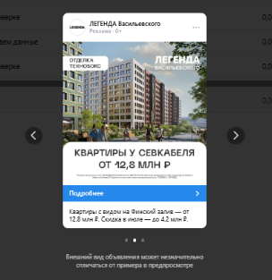
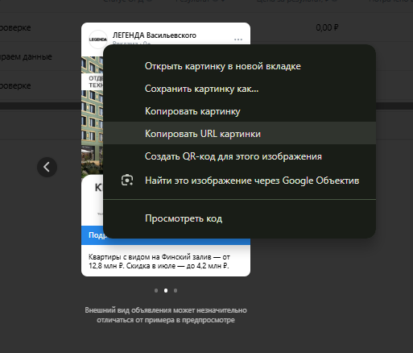
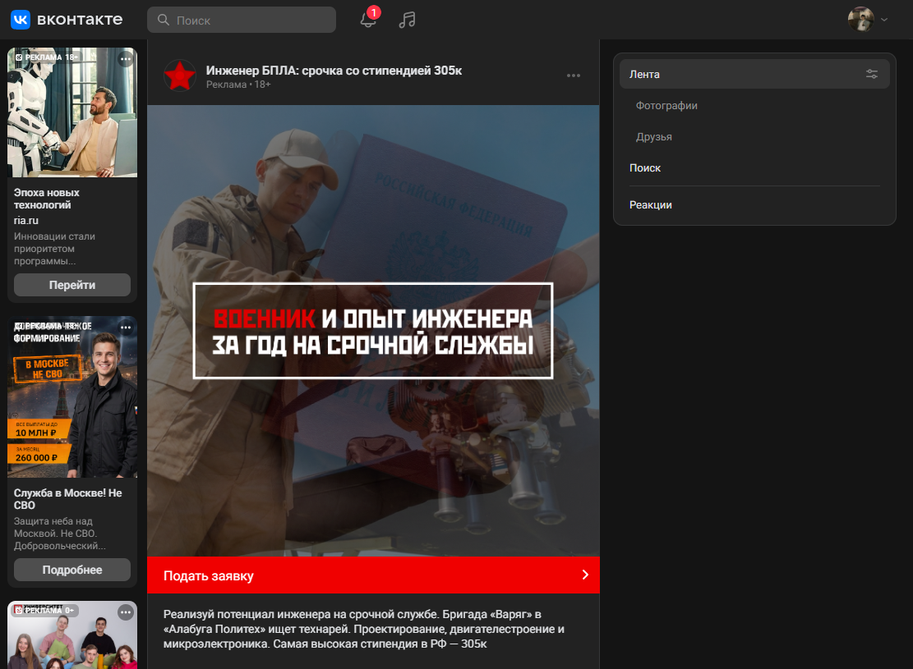
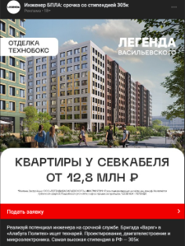
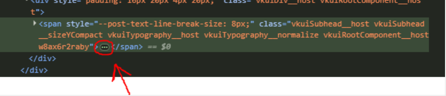
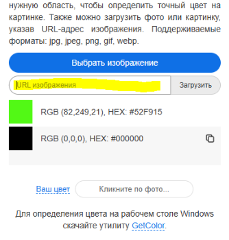
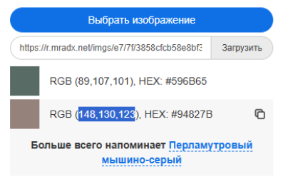
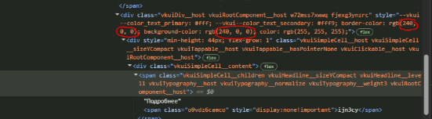
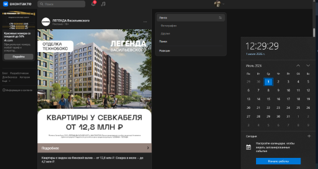

Шаг 1 из 10
Открываем нужное объявление
⚠️ Важно: После внесения изменений не обновляйте страницу, иначе все правки сбросятся.
1 Открываем нужное объявление
Перейдите в рекламный кабинет и выберите нужное рекламное объявление, которое будете использовать как основу для замены.

Рис. 1. Рекламное объявление, скрин которого нам нужен
2 Копируем нужные URL
На странице с исходным объявлением (откуда берём лого и креатив):
- Правой кнопкой по логотипу → «Копировать URL изображения»
- Правой кнопкой по креативу → «Копировать URL изображения»

Рис. 2. Пример объявления, откуда копируем изображения
Сохраните скопированные ссылки — они понадобятся на шаге 4.
3 Открываем код страницы
На странице с выбранным объявлением ВКонтакте (не Яндекс) нажмите F12. Откроется панель разработчика.

Рис. 3. Рекламное объявление для редактирования
4 Заменяем логотип и креатив
Правой кнопкой по иконке объявления → «Просмотреть код». В открывшемся HTML найдите атрибут src="..." и замените на скопированный ранее URL.
<img src="https://ваш-новый-url.png">
То же самое проделайте с креативом.
💡 Подсказка: Если нажать кнопку «Просмотреть код» — вас автоматически перебросит в нужный блок кода, где можно внести изменения.
5 Проверяем результат
Если всё сделали правильно, должны увидеть лого и крео в данном рекламном объявлении, но с чужим текстом.

Рис. 4. Лента ВКонтакте с рекламными объявлениями
6 Меняем текст
- Правой кнопкой по заголовку → «Просмотреть код» → заменить текст
- То же самое с описанием
- То же самое с текстом кнопки
7 Если текст кнопки не отображается
Иногда при «Просмотреть код» на кнопке текст не виден для редактирования.
Решение: необходимо кликнуть (прожать) саму кнопку в выделенном коде — после этого текст станет доступен.

Рис. 5. Сервис для подбора цвета из изображения
8 Подбираем цвет кнопки под креатив
Если не устраивает цвет кнопки — не проблема! Идём по ссылке:
- Перейдите: get-color.ru/image/
- Вставьте URL нужного нам креатива в поле для ввода
- Нажмите «Загрузить»
Сервис покажет доминирующие цвета изображения. Примеры:

Рис. 6. Поиск параметров цвета в коде кнопки

Рис. 7. Замена значений цвета
9 Заменяем цвет кнопки в коде
Получаем нужный нам код кнопки. Идём в код кнопки, находим там BORDER-COLOR и BACKGROUND-COLOR и заменяем значения на нужные.
border-color: rgb(82, 249, 21);
background-color: rgb(82, 249, 21);
Можно использовать как rgb(R, G, B), так и HEX-код #52F915.

Рис. 8. Код, который нужно заменить
10 Финал
Жмём F12 (закрыть код) и получаем нужное нам объявление в ленте!

Рис. 9. Готовое объявление со всеми изменениями
🚨 ВАЖНО: Ни в коем случае не обновляем страницу, иначе всё сбросится!